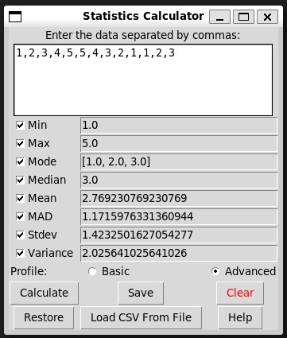

Introduction
The Metricstics system is a sophisticated tool designed to calculate descriptive statistics, providing users with insights into measures of central tendency, frequency, and variability within datasets. It encapsulates the functionality to compute minimum, maximum, mode, median, mean, mean absolute deviation (MAD), standard deviation, and variance, catering to both basic and advanced user profiles.
Getting Started
- Ensure Python 3.6 or later is installed.
- Install required libraries with
pip install tkinter.
- Run the application script
python metricstics.py.
Using the Metricstics Application
The Metricstics application offers an intuitive graphical user interface (GUI) designed for ease of use, allowing users to effortlessly input data, select statistical calculations, and manage sessions. Whether you are a first-time user or returning for further analysis, the process is streamlined for an efficient user experience.

For New Users
- Upon launch, the GUI will display a text widget for data entry and a selection of checkboxes for various statistical operations such as Min, Max, Mode, etc.
- For first-time users, begin by selecting a profile — 'Basic' or 'Advanced'. This pre-selects a standard set of statistical calculations for convenience.
- Input your dataset as comma-separated values in the text field or use the 'Load CSV From File' button to upload a CSV file directly.
- Customize your selection of statistics by checking or unchecking the options as needed.
- Click 'Calculate' to execute the selected operations and the results will be displayed adjacent to the corresponding checkboxes.
- To save the current session's data, click the 'Save' button. Your data will be stored for future reference.
For Returning Users
- Click the 'Restore' button to retrieve your last saved session's data.
- Continue with the analysis by performing additional calculations or modifying the dataset as required.
Users can clear the session data and results by clicking the 'Clear' button, which resets the text widget and deselects all operation checkboxes. For any further assistance or to report issues, please refer to the 'Support' section of this documentation.
2. Functionalities and Features
- Min/Max: Determines the smallest and largest numbers in the dataset.
- Mode: Identifies the most frequently occurring number(s) in the dataset.
- Median: Finds the middle value, separating the higher half from the lower half of the dataset.
- Mean: Calculates the average of the dataset.
- MAD: Computes the mean absolute deviation, a measure of variability.
- Standard Deviation & Variance: Measures the amount of variation or dispersion in the dataset.
- Save Session: Users can save their current session data for future use.
- Clear Fields: Clears all input fields and selections.
- Calculate: Performs the selected statistical calculations.
- Restore Last Session: Retrieves the last saved session data.
- Load from CSV: Allows users to upload a CSV file to use as the dataset.
- Profiles: Users can choose between a 'Basic' and 'Advanced' profile for pre-selected options.
Profiles
Users can select between two profiles:
- Basic: Pre-selects common statistical operations.
- Advanced: Selects all statistical operations for in-depth analysis.
Entering Data
Data can be manually entered into the system or imported via a CSV file. When entering data manually, it should be input as a list of numbers separated by commas, such as 10, 20, 30, 40, 50.
Running Tests
The system includes a comprehensive test suite in the test_statistics.py script, ensuring the reliability of the statistical calculations. The tests can be executed via the command line python test_statistics.py, providing confidence in the accuracy of the statistical methods implemented.
Troubleshooting & Support
The team is dedicated towards improving the Metricstics system and the feedback or issue reporting will be well-received. Incase you come across any issues please create a new issue at the project's issue page: https://github.com/shashank6341/soen-6611/issues